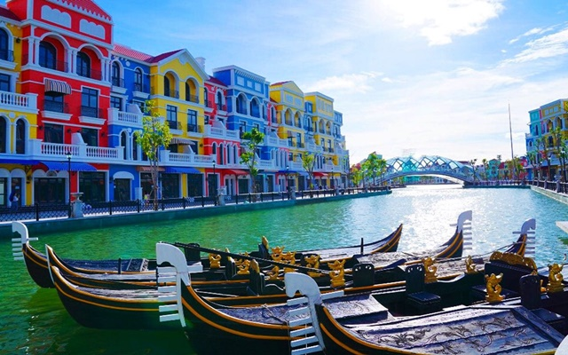
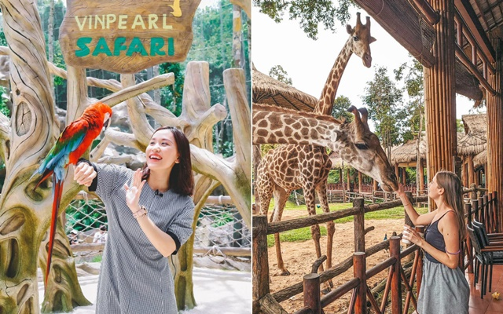
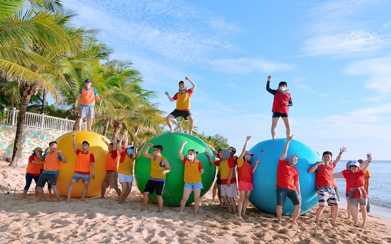
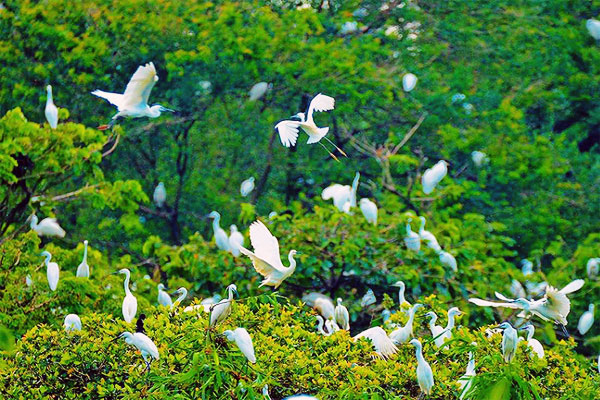
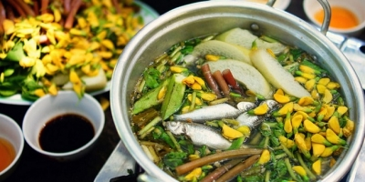
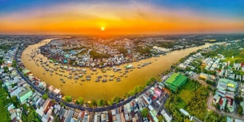
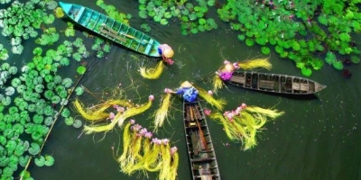

TIN TỨC - SỰ KIỆN

Du lịch Grand World Phú Quốc có gì đẹp & thú vị?
Du lịch Grand World Phú Quốc có gì chơi? Với hệ thống những điểm vui chơi giải trí thú
vị, Grand World Phú Quốc hứa hẹn sẽ là một điểm đến lý tưởng dành cho bạn trong

Du lịch Phú Quốc có gì đặc biệt khiến nhiều du khách say mê đến vậy?
Phú Quốc đã và đang là điểm đến yêu thích của nhiều du khách cả trong lẫn ngoài nước.
Vậy du lịch Phú Quốc có gì đặc biệt mà lại khiến nhiều người

Mách bạn trọn bộ kinh nghiệm du lịch Vinpearl Safari Phú Quốc mới nhất
Là một công viên bảo tồn động vật hoang dã hàng đầu tại Việt Nam, Vinpearl Safari Phú Quốc
có gì thú vị mà lại hấp dẫn nhiều du khách đến vậy? Cùng Du

Quy trình triển khai của công ty team building uy tín, chuyên nghiệp
Team building là một hoạt động thường niên diễn ra phổ biến tại nhiều công ty, tổ chức. Vậy
làm thế nào để tổ chức có thể tìm kiếm được công ty team

Khám phá Đỉnh Mũi Cà Mau - Khu vườn Chim yên bình giữa lòng thành phố
Khu Vườn Chim Cà Mau là nơi cư trú của nhiều loài chim như cò, vạc, điên điển và nhiều loài
khác. Khung cảnh nơi đây, sẽ tạo cho du khách một cảm
ẤN PHẨM DU LỊCH
Cẩm Nang Du Lịch
Những ai đã một lần trải nghiệm mùa nước nổi ở miền Tây thì hẳn sẽ không thể nào quên đi cảnh sắc thiên nhiên và các sản vật khi tràn về. Đây là thời điểm được mong đợi nhất trong năm để du khách có dịp ghé thăm vùng đất thân thươngCẩm Nang Du Lịch
Những ai đã một lần trải nghiệm mùa nước nổi ở miền Tây thì hẳn sẽ không thể nào quên đi cảnh sắc thiên nhiên và các sản vật khi tràn về. Đây là thời điểm được mong đợi nhất trong năm để du khách có dịp ghé thăm vùng đất thân thương

Đặc sản cá linh miền Tây - Món quà của mùa nước nổi
Cá linh là một trong những sản vật quý giá mà mùa nước nổi mang đến cho vùng đất Nam Bộ. Sau
đây, Tour Bốn Phương sẽ giới thiệu đến các bạn những món ngon được chế biến từ đặc sản cá
linh ở miền Tây khiến nhiều du khách phải thương nhớ.

Khám phá chợ nổi Cái Răng Cần Thơ - Nét đẹp xứ sở Tây Đô
Chợ nổi là nét văn hóa đặc trưng của vùng đồng bằng sông Cửu Long. Trong đó chợ nổi Cái Răng
Cần Thơ là khu chợ nổi lớn nhất, được tạp chí Anh Quốc bình chọn là 1 trong 10 khu chợ ấn
tượng nhất thế giới. Hãy cùng Tour Bốn Phương đi tìm hiểu loại hình chợ độc đáo này bạn nhé.

Kinh nghiệm du lịch miền Tây vào mùa nước nổi A - Z
Mùa nước nổi là thời điểm lý tưởng nhất để du lịch miền Tây. Hãy cùng Tour Bốn Phương tìm
hiểu những kinh nghiệm du lịch miền Tây vào mùa nước nổi để có thể lên kế hoạch cho một
chuyến đi miền Tây hoàn hảo bạn nhé!